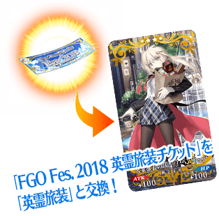
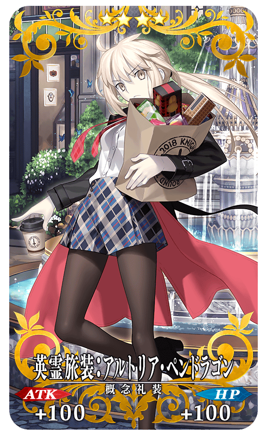
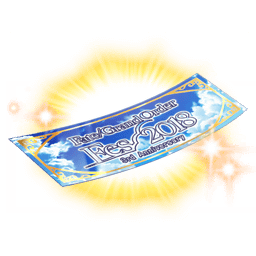
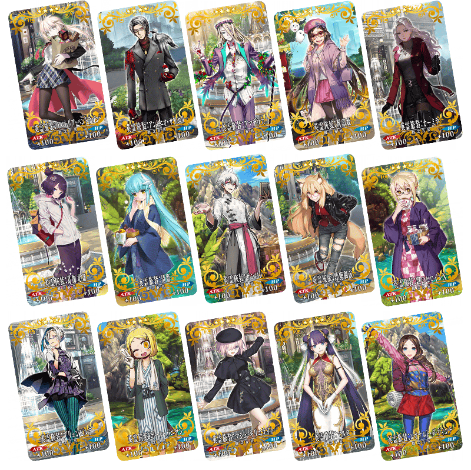
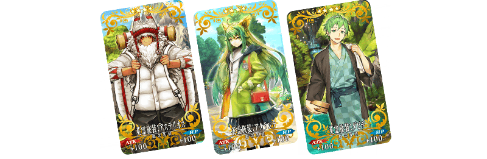
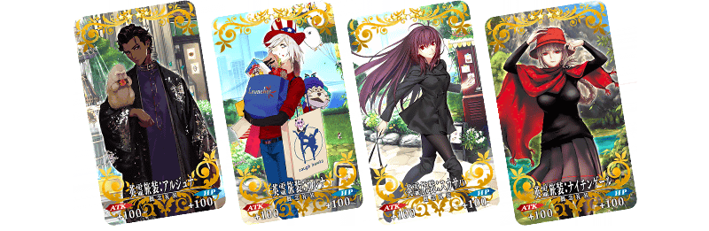
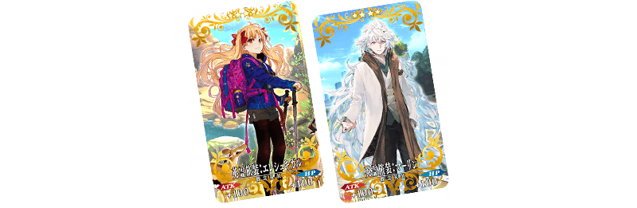
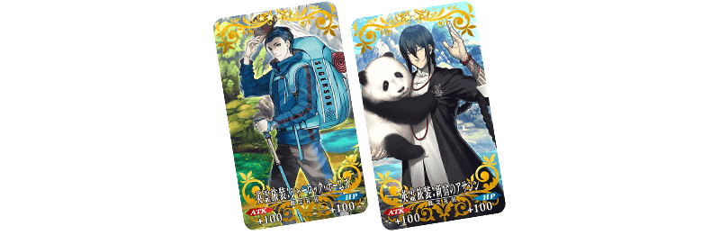
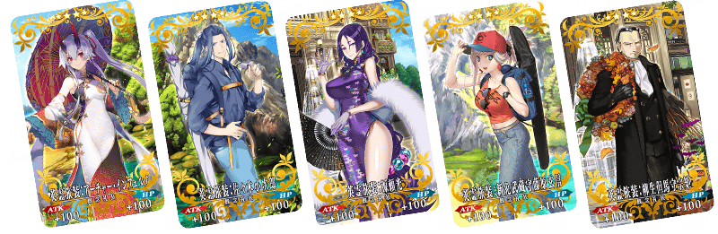
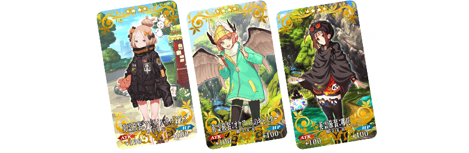

為了記念「Fate/Grand Order Fes. 2018 ～3rd Anniversary～」的舉辦，收集從第一特異點到第七特異點、從亞種特異點Ⅰ到亞種特異點Ⅳ中殘有印象的戰鬥，舉辦「3周年記念回憶關卡」！
通過在迦勒底之門內出現的「回憶關卡」，入手期間限定概念禮裝「英靈旅裝」吧！
所有期間限定概念禮裝「英靈旅裝」的插圖都是特別繪製！
使用通過「回憶關卡」後入手的「FGO Fes. 2018 英靈旅裝券，可從全39張之中選擇喜愛的2張禮裝入手。
「FGO Fes. 2018 英靈旅裝券」在通過第一特異點與第七特異點的「回憶關卡」通過後各入手1張。
1張「FGO Fes. 2018 英靈旅裝券」能交換1張「英靈旅裝」。
在達文西工房內的「活動道具交換」交換喜愛的「英靈旅裝」吧！
「回憶關卡」就算通過後也不會消失，能無數次挑戰，可變更Servant和概念禮裝的組合後再次挑戰。
另外，也會有只限通過所有回憶關卡的Master才能參加的高難易度回憶關卡。
|
◆回憶關卡舉辦期間◆ ◆期間限定概念禮裝「英靈旅裝」交換期間◆ |
 |
◆期間限定概念禮裝「英靈旅裝」◆
|  |
★★★★SR |
※關卡通過報酬、戰利品、Master經驗值、魔術禮裝經驗值、絆點數只可在初次通過時獲得。
※「FGO Fes. 2018 英靈旅裝券」在各區域地圖點擊「活動報酬」或在達文西工房內的「活動道具交換」點擊活動橫幅，可交換活動道具。
※藉由通過「回憶關卡」入手的「FGO Fes. 2018 英靈旅裝券」最多2張。
※請注意做為交換對象的期間限定概念禮裝「英靈旅裝」的種類會根據主線關卡的通過狀況有所變化。
◆回憶關卡開放條件◆
| 關卡名 | 開放條件 | 通過報酬 |
|---|---|---|
| 第一特異點 回憶關卡 |
通過 第一特異點 | 
FGO Fes. 2018 英靈旅裝券 1張 |
| 第二特異點 回憶關卡 |
通過 第二特異點 |  呼符 1張 呼符 1張 |
| 第三特異點 回憶關卡 |
通過 第三特異點 | 呼符 1張 |
| 第四特異點 回憶關卡 |
通過 第四特異點 | 呼符 1張 |
| 第五特異點 回憶關卡 |
通過 第五特異點 | 呼符 1張 |
| 第六特異點 回憶關卡 |
通過 第六特異點 | 呼符 1張 |
| 第七特異點 回憶關卡 |
通過 第七特異點 |
FGO Fes. 2018 英靈旅裝券 1張 |
| 亞種特異點Ⅰ 回憶關卡 |
通過 亞種特異點Ⅰ | 呼符 1張 |
| 亞種特異點Ⅱ 回憶關卡 |
通過 亞種特異點Ⅱ | 呼符 1張 |
| 亞種特異點Ⅲ 回憶關卡 |
通過 亞種特異點Ⅲ | 呼符 1張 |
| 亞種特異點Ⅳ 回憶關卡 |
通過 亞種特異點Ⅳ | 呼符 1張 |
| ？？？ 回憶關卡 |
通過亞種特異點Ⅳ前的回憶關卡 | 呼符 1張 |
※從第二特異點到第七特異點的回憶關卡，若未通過前一個特異點的回憶關卡，就算已通過該章也不會開放下個回憶關卡。

| 開放條件 | 通過後才能交換的「英靈旅裝」 | |
|---|---|---|
| 通過 第一特異點 | ・阿爾托莉亞・潘德拉剛〔Alter〕(Saber) ・安東尼奧・薩里耶利 ・沃夫岡・阿瑪迪斯・莫札特 ・刑部姬 ・卡米拉 ・葛飾北齋 ・清姬(Berserker) ・夏爾＝亨利・桑松 ・鈴鹿御前 ・謎之女主角Ｘ〔Alter〕 ・布倫希爾德 ・保羅・班揚 ・瑪琇・基利艾拉特 ・瑪爾大(Rider) ・李奧納多・達文西 | |
| 開放條件 | 通過後才能交換的「英靈旅裝」 | |
|---|---|---|
| 通過 第二特異點 | ・阿提拉(Saber) ・尼祿・克勞狄烏斯(Saber) | |

| 開放條件 | 通過後才能交換的「英靈旅裝」 | |
|---|---|---|
| 通過 第三特異點 | ・阿斯忒里歐 ・阿塔蘭塔(Archer) ・大衛 | |
| 開放條件 | 通過後才能交換的「英靈旅裝」 | |
|---|---|---|
| 通過 第四特異點 | ・阿爾托莉亞・潘德拉剛〔Alter〕(Lancer) ・玉藻前(Caster) | |

| 開放條件 | 通過後才能交換的「英靈旅裝」 | |
|---|---|---|
| 通過 第五特異點 | ・阿周那 ・迦爾納 ・斯卡哈(Lancer) ・南丁格爾 | |
| 開放條件 | 通過後才能交換的「英靈旅裝」 | |
|---|---|---|
| 通過 第六特異點 | ・玄奘三藏 | |

| 開放條件 | 通過後才能交換的「英靈旅裝」 | |
|---|---|---|
| 通過 第七特異點 | ・艾蕾修卡 ・梅林 | |

| 開放條件 | 通過後才能交換的「英靈旅裝」 | |
|---|---|---|
| 通過 亞種特異點Ⅰ | ・夏洛克・福爾摩斯 ・新宿的Assassin | |

| 開放條件 | 通過後才能交換的「英靈旅裝」 | |
|---|---|---|
| 通過 亞種特異點Ⅲ | ・Archer・地獄 ・佐佐木小次郎 ・源賴光(Berserker) ・宮本武藏 ・柳生但馬守宗矩 | |

| 開放條件 | 通過後才能交換的「英靈旅裝」 | |
|---|---|---|
| 通過 亞種特異點Ⅳ | ・阿比蓋爾・威廉斯 ・俄刻阿諾斯的Caster ・哪吒 | |